Formation défibrillateur · relevé du 21 septembre 2026
Le tableau est engendré depuis la formation elle-même — le manifeste des diapositives pour le texte dit, et la page pour l'ordre des panneaux et le contenu de ceux qui ne sont pas des diapositives. Il ne peut donc pas diverger de ce qui est servi.
| Ce qui est écrit et dit | L'image | |
|---|---|---|
1Ouverturetitre | ||
| 1/3 | Ceci est un défibrillateur. Ceci est un défibrillateur. Ce panneau-là, vous l'avez peut-être déjà croisé sans le regarder. | aucune |
| 2/3 | Il y en a un dans votre immeuble. Il y en a un dans votre immeuble. | aucune |
| 3/3 | Vous n'avez pas besoin de savoir vous en servir : il vous parle. Et vous n'avez pas besoin de savoir vous en servir. Il s'allume tout seul, il vous parle, et il décide à votre place. En vingt-cinq minutes, vous saurez quoi faire avant qu'il arrive. | aucune |
2Ouvertureeffondrement | ||
| 1/4 | Midi. La cafétéria de votre immeuble. Il est midi. La cafétéria de votre immeuble. Deux collègues à la même table. | t1.jpg |
| 2/4 | Un collègue s'arrête de parler. Un collègue s'arrête de parler, au milieu d'une phrase. | t2.jpg |
| 3/4 | Il ne se rattrape pas. Il glisse de sa chaise. Il ne se rattrape pas. | 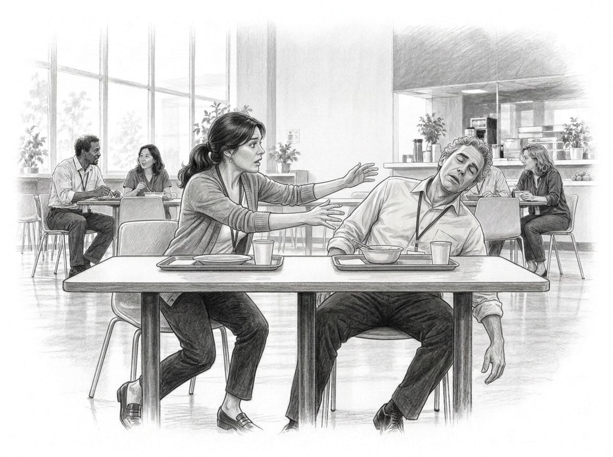 t3.jpg |
| 4/4 | Vous êtes la personne la plus proche. En quelques secondes, il est au sol. Vous n'êtes pas soignant, vous n'avez aucune formation médicale. Vous êtes la personne la plus proche. | 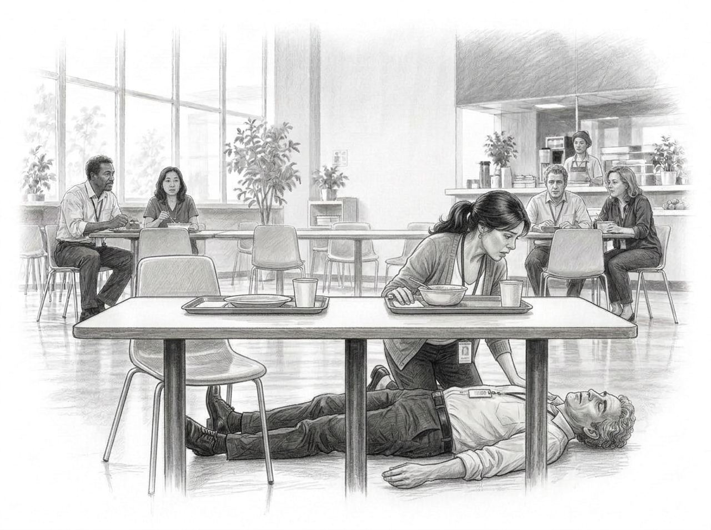 t4.jpg |
3Ouverturecompteur | ||
| 1/4 | Chaque minute coûte environ 10 % de ses chances. À partir de l'instant où son cœur s'arrête, chaque minute sans réanimation lui coûte environ dix pour cent de ses chances de survie. | aucune |
| 2/4 | Dix minutes, et il n'en reste plus. Au bout de dix minutes, il n'en reste plus. | aucune |
| 3/4 | Les secours mettent huit à dix minutes. Les secours mettent en moyenne huit à dix minutes à arriver. Faites le calcul : quand ils franchissent la porte, presque tout s'est déjà joué. | aucune |
| 4/4 | Ce qui se passe avant, c'est vous. Ce qui se passe avant leur arrivée, c'est vous. | aucune |
4Ouverturepromesse | ||
| 1/4 | Deux signes à reconnaître. Vous n'avez que deux signes à reconnaître. Deux, pas trois. | aucune |
| 2/4 | Deux personnes à désigner. Deux personnes à désigner nommément : une pour appeler, une pour aller chercher le défibrillateur. | aucune |
| 3/4 | Une cadence à tenir. Une cadence à tenir avec vos mains, au milieu de sa poitrine. | aucune |
| 4/4 | Le reste, l'appareil le fait. Et pour le reste, l'appareil le fait. Il analyse, il décide, il vous parle. Il ne délivrera jamais un choc à quelqu'un qui n'en a pas besoin : vous ne pouvez pas vous tromper avec lui. | aucune |
5Reconnaîtrereconnaitre | ||
| 1/3 | Secouez-lui les épaules. D'abord, secouez-lui doucement les épaules. | 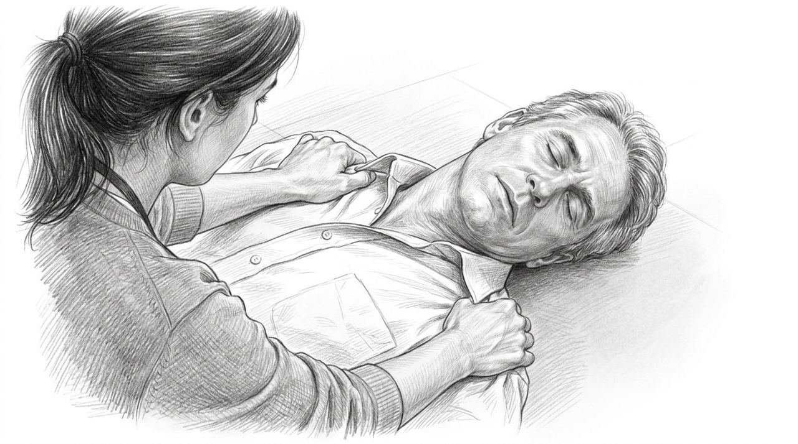 d1-epaules.jpg |
| 2/3 | Appelez-le fort. Appelez-le fort, tout près du visage. Réponds-moi ! Réponds-moi ! | 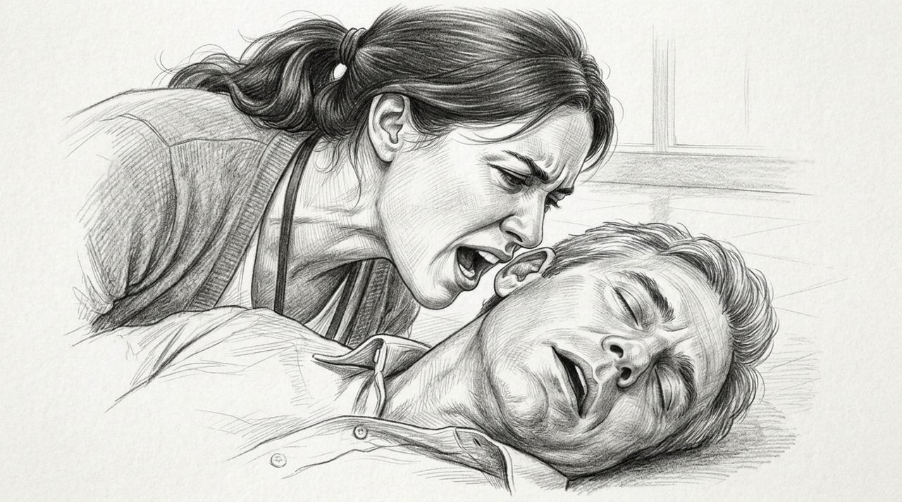 d1-appel.jpg |
| 3/3 | Rien. Premier signe. Il ne répond pas, ne bouge pas, n'ouvre pas les yeux. C'est le premier des deux signes. | 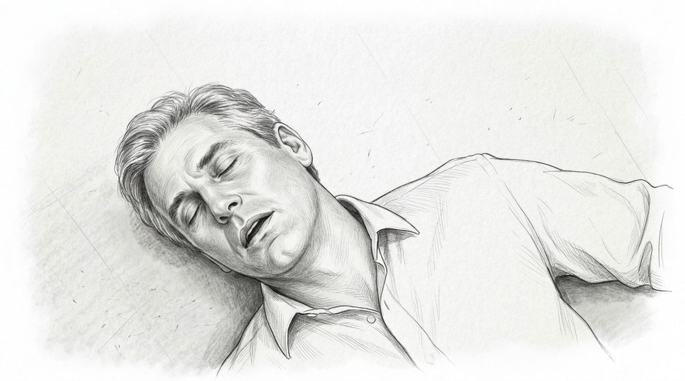 d1-signe1.jpg |
6Reconnaîtrepoitrine | ||
| 1/4 | Dix secondes. Pas plus. Maintenant, regardez sa poitrine. Dix secondes, pas plus. | 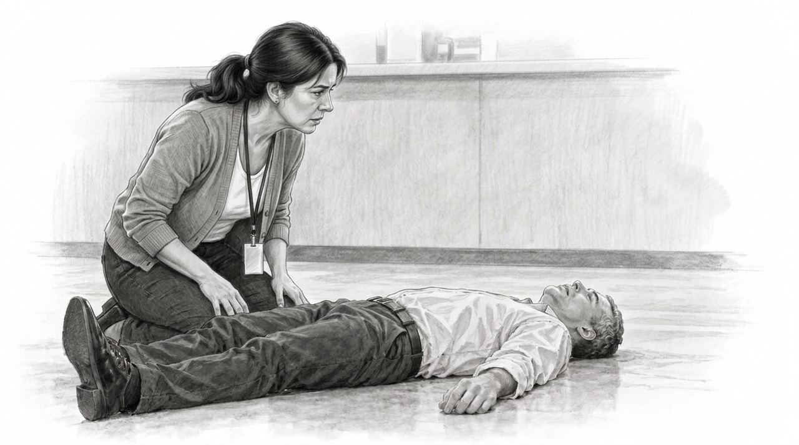 d2-regarder.jpg |
| 2/4 | Elle ne se soulève pas. Elle ne se soulève pas normalement. | d2-thorax.jpg |
| 3/4 | Un halètement n'est pas une respiration. S'il halète, s'il râle, s'il ronfle : ce n'est pas une respiration. C'est le deuxième signe, et c'est celui qui trompe tout le monde. | d2-agonal.jpg |
| 4/4 | Ces deux signes suffisent. Ces deux signes suffisent. Vous n'avez rien d'autre à vérifier avant d'agir. | d2-regarder.jpg |
7Reconnaîtreagonal-piege | ||
| 1/4 | Beaucoup de personnes halètent, au début. Dans les premières minutes d'un arrêt cardiaque, beaucoup de personnes émettent des halètements bruyants et irréguliers. | aucune |
| 2/4 | Ça ressemble à un ronflement, à un râle. Ça ressemble à un ronflement, à un hoquet, à un râle. | aucune |
| 3/4 | Ce n'est pas une respiration. Ce n'est pas une respiration. | aucune |
| 4/4 | C'est l'erreur qui coûte le plus cher. C'est l'erreur qui coûte le plus cher : les témoins voient bouger, entendent du bruit, et concluent qu'elle respire encore. Ils attendent. Les minutes passent. | aucune |
8Reconnaîtrepouls | ||
| 1/3 | On ne cherche pas le pouls. Et le pouls ? On ne le cherche pas. Les protocoles destinés au public l'ont retiré. | aucune |
| 2/3 | Long à trouver, peu fiable. Il est long à trouver et peu fiable : les soignants eux-mêmes s'y trompent. | aucune |
| 3/3 | Chaque seconde à le chercher est une seconde sans compression. Et chaque seconde passée à le chercher est une seconde sans compression. Si vous vous attendiez à en entendre parler, c'est normal : on l'a enseigné pendant des décennies. Son retrait sauve des vies plutôt que d'en coûter. | aucune |
| 9Reconnaîtresans diapositive — exercice ou texte | ||
| — | Choisissez un tracé. Montez le son. · Une respiration normale Ce qu'on voit dans un arrêt cardiaque Me tester : lequel est-ce ? Arrêter 🔊 Son · Le son est synthétisé, pas enregistré. Ce qu'il faut reconnaître n'est pas un timbre mais un rythme : l'espacement, l'attaque brusque, le râle. · Elle respire normalement Ce n'est pas une respiration normale | aucune |
10Alerter et déléguerdesigner | ||
| 1/4 | Choisissez une personne. Ne dites jamais : que quelqu'un appelle le neuf un un. Choisissez une personne. | 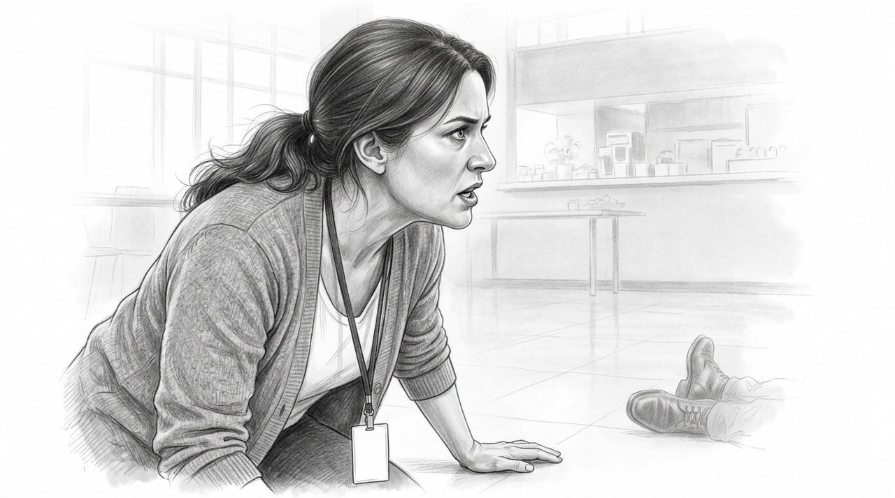 d3-choisir.jpg |
| 2/4 | Désignez-la du doigt. Regardez-la dans les yeux, et désignez-la du doigt. | 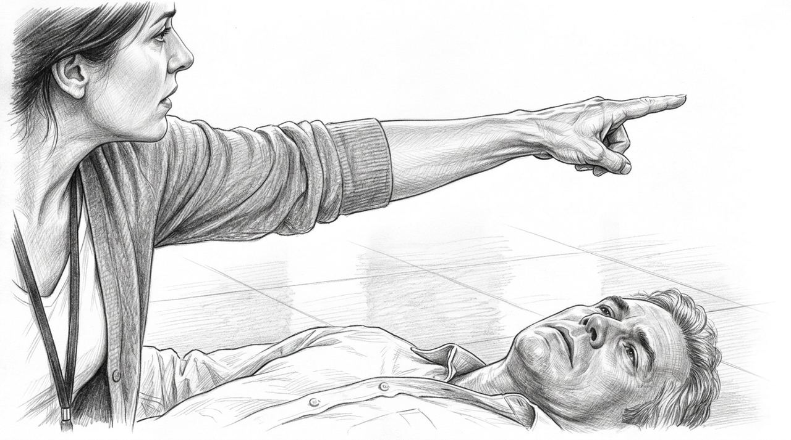 d3-designer.jpg |
| 3/4 | « Vous, appelez le 911. » Vous, appelez le neuf un un, et revenez me le dire. Une personne, une tâche. | d3-ordre.jpg |
| 4/4 | Puis la deuxième, pour l'appareil. Puis vous en désignez une deuxième, pour aller chercher le défibrillateur. | d3-choisir.jpg |
| 11Alerter et déléguersans diapositive — exercice ou texte | ||
| — | « Vite, quelqu'un appelle le 911 ! » « Vous, en bleu, appelez le 911 et revenez me le dire. » « Est-ce que quelqu'un pourrait aller voir s'il y a un défibrillateur ? » | aucune |
12Alerter et déléguerordres-exacts | ||
| 1/4 | « Vous, en bleu, appelez le 911 et revenez me le dire. » Le premier ordre, mot pour mot : vous, en bleu, appelez le neuf un un et revenez me le dire. | aucune |
| 2/4 | Le « revenez me le dire » compte. Le revenez me le dire n'est pas une politesse : c'est ce qui vous confirme que l'appel a bien été fait. | aucune |
| 3/4 | « Le DEA est dans le hall, à droite. Courez. » Le deuxième : vous, le défibrillateur est dans le hall d'entrée, à droite, près de la réception. Allez le chercher, courez. | aucune |
| 4/4 | L'emplacement est dans l'ordre lui-même. L'emplacement fait partie de l'ordre. La personne à qui vous parlez ne le connaît peut-être pas. | aucune |
13Alerter et déléguerseul | ||
| 1/3 | Seul ? Le 911, haut-parleur, par terre. Et si vous êtes seul ? Composez le neuf un un, mettez le haut-parleur, posez le téléphone par terre à côté de vous. | aucune |
| 2/3 | Comprimez pendant que vous parlez. Et commencez les compressions pendant que vous parlez. La répartitrice vous entendra très bien. | aucune |
| 3/3 | C'est elle qui tranche s'il faut partir. Si vous êtes vraiment seul et loin du hall, ne décidez pas tout seul de partir : dites-lui où vous êtes, et suivez ce qu'elle vous dit. C'est elle qui tranche s'il faut quitter la personne. | aucune |
14Comprimercomprimer | ||
| 1/4 | Au milieu de la poitrine. Le talon de votre main au milieu de sa poitrine, sur l'os, à hauteur des mamelons. Pas sur le ventre. | 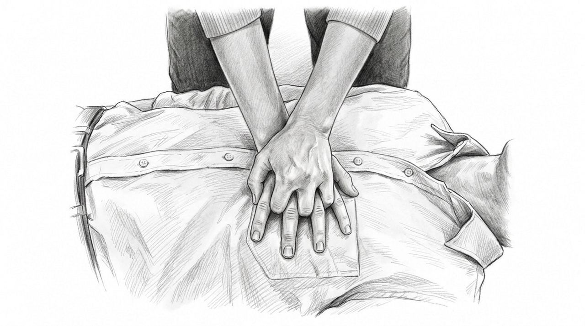 d4-mains.jpg |
| 2/4 | Bras tendus, épaules au-dessus des mains. Les deux bras tendus, verrouillés, les épaules à la verticale de vos mains. C'est votre poids qui appuie, pas vos bras. | 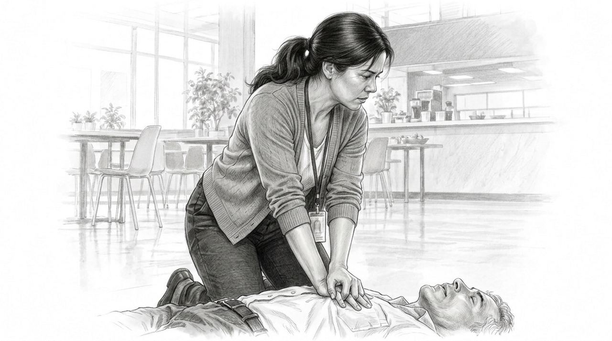 d4-bras.jpg |
| 3/4 | Au moins cinq centimètres. Au moins cinq centimètres de profondeur. C'est plus fort que vous ne le croyez, et c'est normal. | 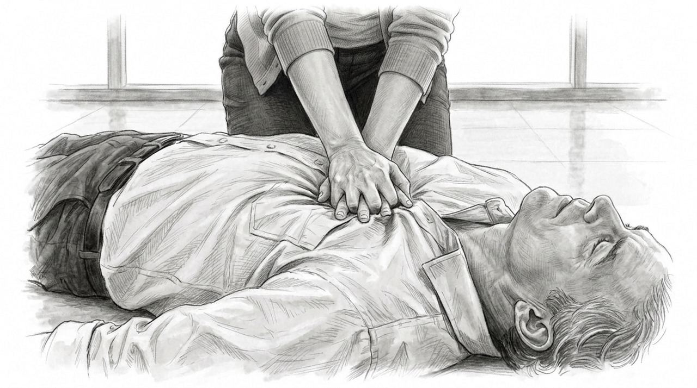 d4-profond.jpg |
| 4/4 | Laissez la poitrine remonter, sans lever les mains. Entre deux compressions, laissez la poitrine remonter complètement, sans jamais décoller vos mains : c'est la remontée qui remplit le cœur. | 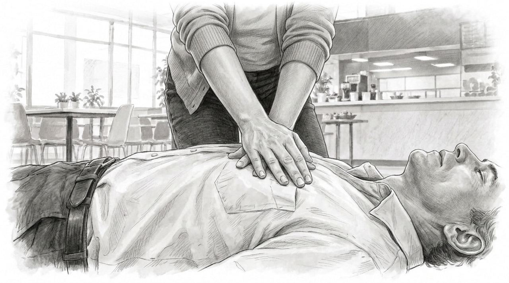 d4-remonte.jpg |
| 15Comprimersans diapositive — exercice ou texte | ||
| — | — par minute · cible 100–120 · · · · ▶ Entendre la cadence Arrêter · Frappez ici avec le rythme Un clic à 110 par minute — le milieu de la plage. Écoutez-le une fois, puis frappez avec, sans le regarder. | aucune |
16Comprimercompressions-seules | ||
| 1/3 | Pas de bouche-à-bouche. Pas de bouche-à-bouche. Pour un adulte, dans le grand public, les compressions seules sont ce qui est recommandé. | aucune |
| 2/3 | Le sang contient encore de l'oxygène. Pendant les premières minutes, le sang en contient encore. | aucune |
| 3/3 | Ce qui manque, c'est de le faire circuler. Ce qui manque, ce n'est pas de l'air : c'est quelque chose pour le faire circuler. C'est exactement ce que font vos mains. | aucune |
17L'appareilappareil | ||
| 1/4 | Ouvrez la mallette. Il se met en marche tout seul. Ouvrez la mallette. L'appareil se met en marche tout seul, et il vous parle. Faites ce qu'il dit, dans l'ordre où il le dit. | 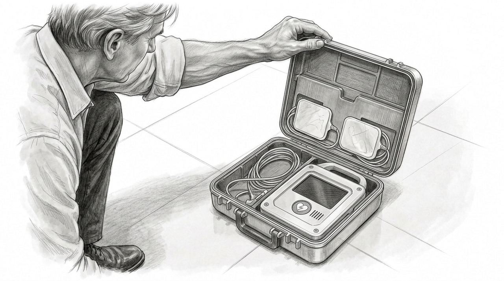 a5-ouvre.jpg |
| 2/4 | Collez les électrodes sur la peau nue. Dénudez-lui la poitrine, et collez les deux électrodes en suivant le dessin imprimé dessus. Sur la peau nue, jamais sur le tissu. | 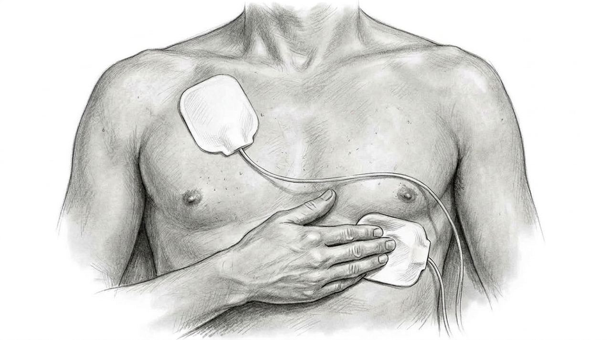 a5-pose.jpg |
| 3/4 | Mouillée ? Essuyez. Si la peau est mouillée, essuyez-la, avec n'importe quel tissu sec. | 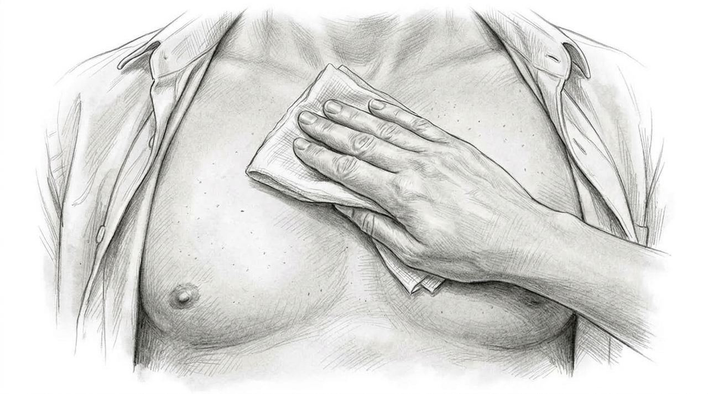 a5-essuyer.jpg |
| 4/4 | Chaîne, armature, timbre : écartez. Écartez de la zone des électrodes ce qui gêne : une chaîne, un soutien-gorge à armature, un timbre de médicament collé sur la peau. | 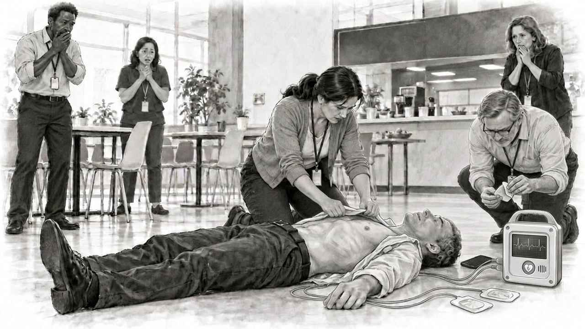 31b.jpg |
18L'appareilanalyse | ||
| 1/5 | « Il analyse » : personne ne touche. Quand il annonce l'analyse, ne touchez plus la personne — et dites-le fort autour de vous, parce que les autres ne l'ont peut-être pas entendu. | 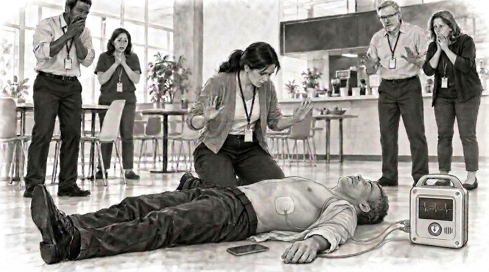 34.jpg |
| 2/5 | « Écartez-vous, personne ne touche ! » S'il conseille un choc, il fait clignoter le bouton. Criez : écartez-vous, personne ne touche. Et regardez : une main, un pied posé sur elle, ça suffit. | 34.jpg |
| 3/5 | L'appareil est de l'autre côté de lui. L'appareil est posé de l'autre côté de son corps. Vous vous penchez par-dessus lui, une main au sol, sans jamais le toucher. | 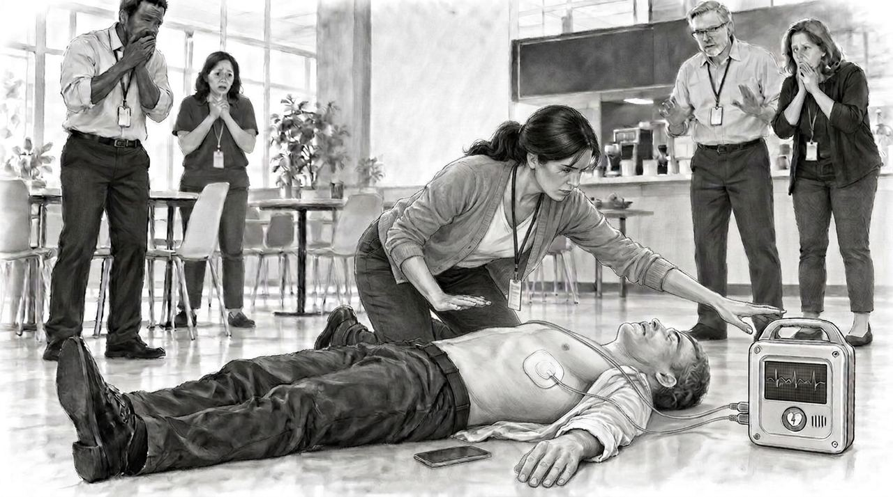 34c.jpg |
| 4/5 | Puis vous appuyez. Puis vous appuyez sur le bouton. | 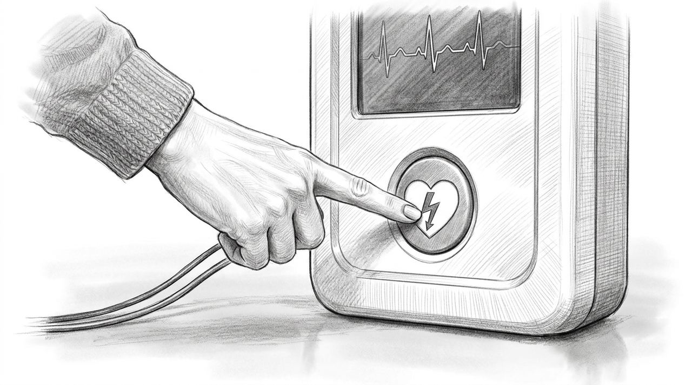 a5-appuyer.jpg |
| 5/5 | Et vous reprenez tout de suite. Et vous reprenez les compressions immédiatement après le choc, sans attendre, sans rien vérifier. L'appareil vous redemandera de vous écarter dans deux minutes. | 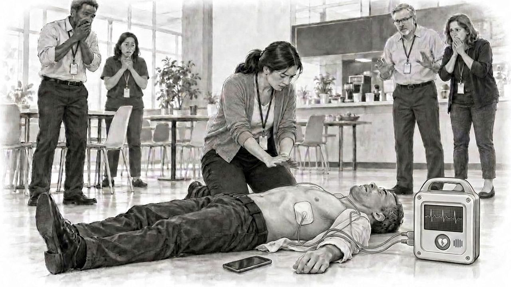 35.jpg |
| 19L'appareilsans diapositive — exercice ou texte | ||
| — | Cliquez les gestes dans l'ordre où vous les faites. · · · Recommencer | aucune |
20L'appareilce-qu-il-fait | ||
| 1/4 | Il ne choque que deux rythmes. L'appareil lit le rythme du cœur, et il ne choque que deux rythmes précis : la fibrillation ventriculaire, et la tachycardie ventriculaire sans pouls. | aucune |
| 2/4 | Le cœur ne bat pas : il tremble, ou il s'emballe à vide. Dans ces deux cas, le cœur ne bat pas. Il tremble, ou il s'emballe à vide. | aucune |
| 3/4 | Le choc n'est pas un coup de fouet, c'est une remise à zéro. Le choc ne redémarre pas un cœur arrêté à plat. Il fait le contraire : il arrête tout une fraction de seconde, pour que le cœur reparte de lui-même avec un rythme ordonné. | aucune |
| 4/4 | « Aucun choc conseillé » ne veut pas dire « c'est fini ». Donc aucun choc conseillé ne veut jamais dire c'est fini. Ça veut dire que le choc ne sert à rien sur ce rythme-là. Vous reprenez les compressions immédiatement. | aucune |
21L'appareilobjection | ||
| 1/4 | « Et si je m'en sers sur quelqu'un qui n'en a pas besoin ? » L'objection numéro un, celle qu'on entend presque chaque fois : et si je m'en sers sur quelqu'un qui n'en a pas besoin ? | aucune |
| 2/4 | Vous ne pouvez pas. Vous ne pouvez pas. L'appareil analyse avant de délivrer quoi que ce soit. | aucune |
| 3/4 | S'il ne reconnaît pas un rythme choquable, il refuse. S'il ne reconnaît pas un rythme choquable, il refuse. Même si vous appuyez sur le bouton. Même si vous appuyez dix fois. | aucune |
| 4/4 | Il n'y a pas de scénario où vous électrocutez quelqu'un. Il n'y a pas de scénario où vous électrocutez quelqu'un par erreur. C'est une machine qui dit non. | aucune |
22Passer le relaisrelais | ||
| 1/4 | Vous continuez. Vous continuez. Vous ne vous arrêtez pas pour vérifier, vous ne vous arrêtez pas pour réfléchir. | aucune |
| 2/4 | Jusqu'à ce qu'il bouge, ou qu'on vous remplace. Jusqu'à ce qu'il se remette à bouger ou à respirer normalement, ou jusqu'à ce que les secours vous remplacent. | aucune |
| 3/4 | À deux, changez aux deux minutes. Si quelqu'un d'autre peut comprimer, relayez-vous toutes les deux minutes. | aucune |
| 4/4 | Fatigué, on comprime moins fort sans le savoir. C'est mesuré : au bout de deux minutes, la fatigue fait perdre de la profondeur, et celui qui comprime ne s'en aperçoit pas. | aucune |
23Passer le relaispassation | ||
| 1/3 | Ce que vous avez vu. Quand ils arrivent, dites-leur ce que vous avez vu. Elle s'est effondrée, elle ne répondait pas, elle ne respirait pas normalement. Et depuis combien de temps, à peu près. | aucune |
| 2/3 | Ce que vous avez fait. Puis ce que vous avez fait. Compressions depuis environ six minutes, le défibrillateur a donné un choc. | aucune |
| 3/3 | Puis retirez-vous. Vous n'avez pas à rester. Puis retirez-vous. Vous n'avez pas à rester. | aucune |
24Passer le relaisapres | ||
| 1/4 | Vous avez le droit d'être secoué après. Un dernier point, et il compte autant que le reste. Vous avez le droit d'être secoué après. | aucune |
| 2/4 | C'est une réaction ordinaire à une chose qui ne l'est pas. Les mains qui tremblent, la nuit blanche, le fait d'y repenser pendant des jours : c'est une réaction ordinaire à une chose qui ne l'est pas. Parlez-en à quelqu'un. Si votre employeur a un programme d'aide, il est fait exactement pour ça. | aucune |
| 3/4 | Même bien faite, une réanimation échoue souvent. Et sachez-le d'avance : même bien faite, une réanimation échoue souvent. Cela ne veut pas dire que vous avez mal fait. | aucune |
| 4/4 | Sans vous, il n'y avait aucune chance. Sans vous, il n'y avait aucune chance. Avec vous, il y en avait une. | aucune |
| 25Les objectionssans diapositive — exercice ou texte | ||
| — | Vos objections · Les raisons de ne rien faire, une par une. · Elles sont toutes légitimes. Aucune ne tient devant ce qui se joue. · · « J'ai peur de mal faire. » La seule chose qu'on peut vraiment mal faire, c'est ne rien faire. Une compression trop lente, mal placée, trop peu profonde vaut infiniment mieux que l'absence de compression — parce que sans elle, plus rien ne circule. · Et vous ne serez pas seul : la répartitrice du 911 reste en ligne et vous guide, l'appareil parle et vous dit quoi faire. · · « J'ai peur de casser des côtes. » Ça arrive, et c'est fréquent. Une côte cassée se soigne en quelques semaines. Un arrêt cardiaque non traité ne se soigne pas. · Si vous appuyez assez fort pour craindre de casser quelque chose, vous appuyez probablement à la bonne profondeur. · · « Et si on me poursuit ? » Au Québec, le Code civil vous protège. L'article 1471 prévoit que la personne qui porte secours à autrui est exonérée de toute responsabilité pour le préjudice qui peut en résulter — sauf faute intentionnelle ou faute lourde. · Autrement dit : vouloir aider et s'y prendre imparfaitement est couvert. Ce qui ne l'est pas, c'est vouloir nuire, ou une imprudence si grossière qu'elle relève de l'insouciance. · Ce n'est pas un avis juridique, et cette formation n'en donne pas. C'est le texte de la loi, et il dit ce qu'il dit. | aucune |
| 26Les objectionssans diapositive — exercice ou texte | ||
| — | Cette gêne est réelle, elle est humaine, et elle est documentée : les femmes reçoivent moins souvent une réanimation par un témoin que les hommes, et cet écart coûte des vies. · Le fait est simple : les électrodes ne fonctionnent pas à travers un vêtement. Ouvrez, déchirez ou coupez ce qu'il faut. Personne, jamais, n'a reproché à quelqu'un d'avoir ouvert un chemisier pour lui sauver la vie. · Si vous voulez faire les choses bien : demandez aux curieux de reculer, et une fois les électrodes posées, posez une veste sur le reste. Cela ne coûte rien et ça règle la question. · · « Ce n'est pas mon rôle, il y a des secouristes désignés dans l'immeuble. » Il y en a, et ils sont formés. Mais ils sont peut-être à un autre étage, en réunion, ou absents ce jour-là. Les minutes qui décident de l'issue sont celles qui précèdent l'arrivée de qui que ce soit. · Vous n'êtes pas là pour les remplacer. Vous êtes là pour tenir jusqu'à eux. · · « Et si elle respirait encore, en fait ? » Vous avez regardé sa poitrine dix secondes, elle ne répond à rien : agissez. Une personne qui respire vraiment réagit aux compressions — elle bouge, elle gémit, elle repousse votre main. Vous vous en apercevrez tout de suite, et vous arrêterez. · Le risque de comprimer quelqu'un qui n'en avait pas besoin est très faible. Le risque de ne pas comprimer quelqu'un qui en avait besoin est mortel en quelques minutes. | aucune |
| 27La simulationsans diapositive — exercice ou texte | ||
| — | Simulation · Parfait. · Vous avez vu ce qu'il faut voir. Vous êtes maintenant rendu au moment de le faire une fois pour de vrai, dans le simulateur. · · Lancer la simulation La cafétéria, les deux collègues, et vous — une seule fois, sans reprise. · Fermer | aucune |
| 28La simulationsans diapositive — exercice ou texte | ||
| — | aucune | |
| 29Vérifiersans diapositive — exercice ou texte | ||
| — | Vérification · Huit décisions. · Pas de définitions. Chaque question est un moment où il faut choisir. · · · /8 | aucune |
| 30Vérifierquestion 1 du quiz | ||
| — | Où est le défibrillateur de votre immeuble ? — Au poste de sécurité, au sous-sol | aucune |
| 31Vérifierquestion 2 du quiz | ||
| — | Vous êtes seul au 3<sup>e</sup> étage. Une collègue s’effondre, elle ne ' + 'répond pas et ne respire pas normalement. Que faites-vous en premier ? — Je descends chercher le DEA au hall | aucune |
| 32Vérifierquestion 3 du quiz | ||
| — | La personne fait des bruits de gorge irréguliers, comme des ronflements ' + 'espacés. Elle respire ? — Oui, puisqu’elle fait du bruit | aucune |
| 33Vérifierquestion 4 du quiz | ||
| — | Vous êtes entouré de collègues. Que dites-vous pour faire appeler les secours ? — « Vite, quelqu’un appelle le 911 ! » | aucune |
| 34Vérifierquestion 5 du quiz | ||
| — | À quelle profondeur et à quel rythme comprimez-vous un adulte ? — Environ 2 cm, aussi vite que possible | aucune |
| 35Vérifierquestion 6 du quiz | ||
| — | L’appareil annonce : « aucun choc conseillé ». Vous faites quoi ? — J’arrête : l’appareil a dit que ce n’était pas nécessaire | aucune |
| 36Vérifierquestion 7 du quiz | ||
| — | La personne au sol est une femme en chemisier. Le DEA est arrivé. — Je pose les électrodes par-dessus le chemisier pour préserver sa pudeur | aucune |
| 37Vérifierquestion 8 du quiz | ||
| — | Les paramédics arrivent pendant que vous comprimez. — | aucune |
| 38Vérifiersans diapositive — exercice ou texte | ||
| — | Le DEA est au hall d'entrée, à droite, près de la réception. · Deux signes : elle ne répond pas, elle ne respire pas normalement. Les halètements ne sont pas une respiration. · Deux personnes désignées : « Vous, appelez le 911 et revenez me le dire » · « Vous, le DEA est au hall à droite, courez ». · Comprimez au milieu de la poitrine, au moins 5 cm, 100 à 120 fois par minute, sans bouche-à-bouche. · L'appareil parle : faites ce qu'il dit. Écartez-vous pour l'analyse et le choc. · « Aucun choc conseillé » = reprenez les compressions tout de suite. | aucune |
39Vérifierpour-finir | ||
| 1/3 | Ceci ne remplace pas une certification en RCR. Pour finir : cette formation ne remplace pas une certification en réanimation cardio-respiratoire. | aucune |
| 2/3 | Quatre choses s'apprennent seulement sur un mannequin. Quatre choses s'apprennent seulement sur un mannequin, avec quelqu'un qui corrige : la profondeur réelle, le relâchement complet, la position exacte des mains, et ce que fait la fatigue à votre technique. | aucune |
| 3/3 | Une heure y suffit. Demandez à votre employeur. Une heure y suffit. Côté travail, ces places sont souvent déjà budgétées : demandez à votre employeur. | aucune |
| 40Vérifiersans diapositive — exercice ou texte | ||
| — | Pour finir · Cette formation ne remplace pas une certification en RCR. · Quatre choses s'apprennent seulement sur un mannequin, avec quelqu'un qui corrige : la profondeur réelle, le relâchement complet, la position exacte des mains, et ce que fait la fatigue à votre technique. Une heure y suffit. · Où en suivre une : les cours grand public de Cœur + AVC, de la Croix-Rouge canadienne et d'Ambulance Saint-Jean sont donnés partout au Québec. Côté travail, la formation « Secouriste en milieu de travail » de la CNESST dure 16 heures, est donnée par un fournisseur reconnu, et la carte est valide trois ans. Demandez à votre employeur : ces places sont souvent déjà budgétées. · Chiffres et gestes conformes aux lignes directrices de la Fondation des maladies du cœur et de l'AVC du Canada (chute de survie d'environ 10 % par minute, profondeur d'au moins 5 cm, cadence de 100 à 120 par minute, compressions seules pour le grand public, relais aux deux minutes, aucune prise de pouls). Protection du secouriste : article 1471 du Code civil du Québec. Le numéro d'urgence est le 911. · Simulateur de défibrillateur intégré à la partie 8 : SimDEA. · · · ← Retour Commencer | aucune |